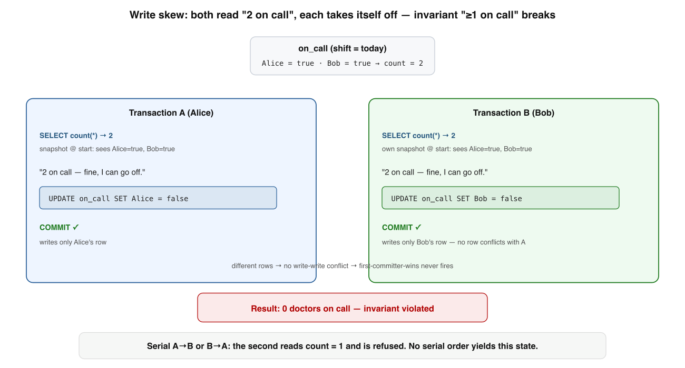
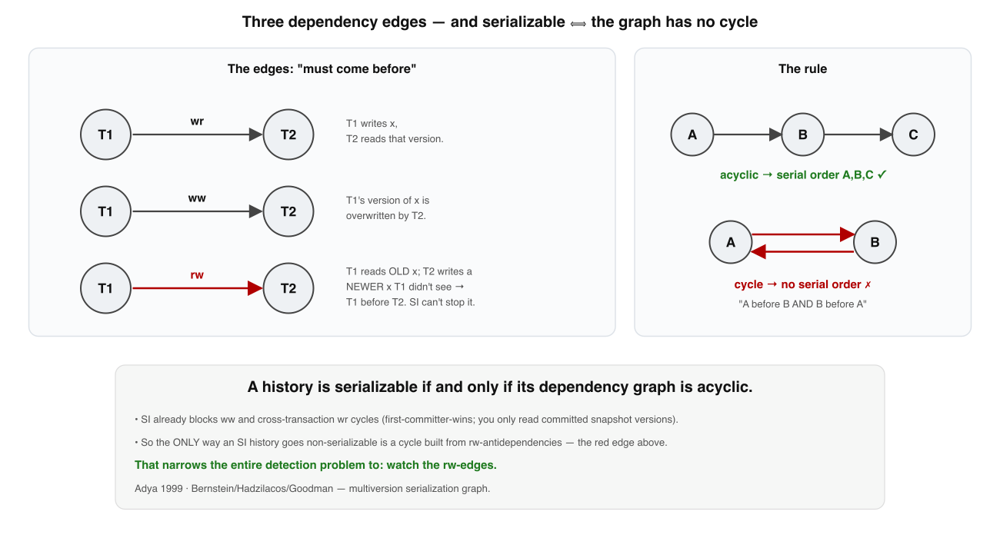
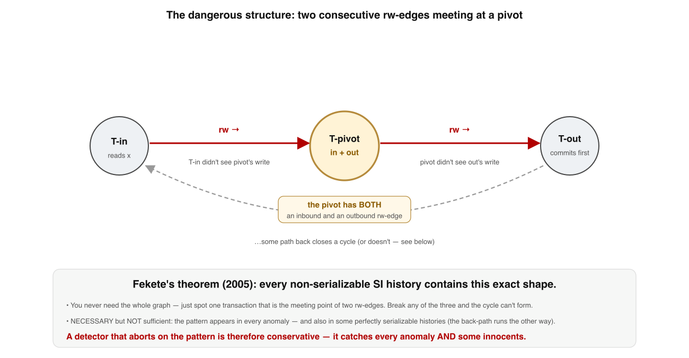
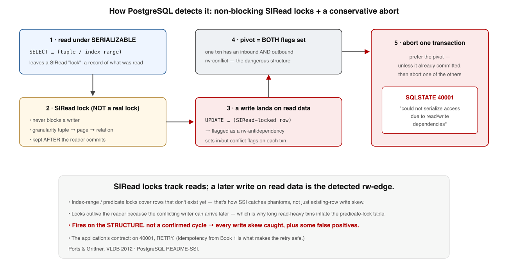
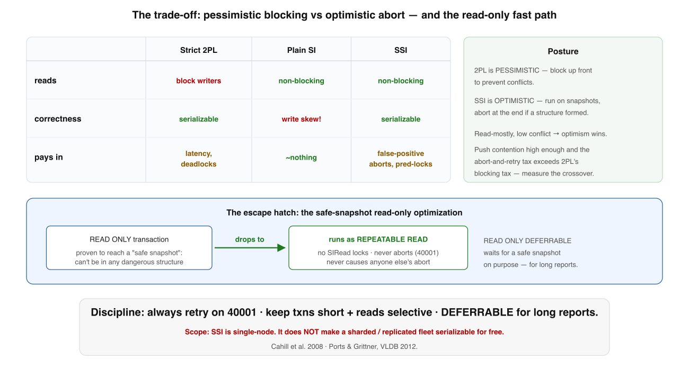

Transactions & Isolation · Deep dive · visual edition
Serializable Snapshot Isolation
~25 min · 5 levels · graph theory → runtime detector · interview questions + interactive recall
Your bar: on a whiteboard, explain how a database can let everyone read a stale, non-blocking
snapshot and still guarantee the result is equivalent to running transactions one at a time. The trick is
a small piece of graph theory turned into a cheap, deliberately conservative runtime detector. Grounded in
Fekete et al. (2005)2, Cahill et al. (2008)1,
and the PostgreSQL implementation (Ports & Grittner, VLDB 2012)3.
One sentence holds the whole lesson. Each level unpacks one chip of it:
Snapshot isolation's only hole is write skewevery anomaly is a cycle of rw-edgesall reduce to one dangerous structuredetect & abort, conservatively
Memorise this banner. Levels 1–5 are exactly these four boxes plus the bill at the end.
1
Snapshot isolation's blind spot — write skew
SI blocks dirty reads, non-repeatable reads, and lost updates — but not this.

Write skew breaks an invariant no single transaction violates. Two on-call doctors each read "2 on call — the other covers it," then each updates their own row. Different rows → no write-write conflict → first-committer-wins never fires. Both commit; zero doctors on call. No serial order produces this.Both read the same condition on overlapping rows, then each writes a different row. SI sees no conflict.
Is Two txns read an overlapping set, each writes a different row whose safety depended on what the other read.
Why SI misses it Different rows → no write-write conflict → first-committer-wins (which only catches same-row clashes) never fires.
Pattern Any "check a condition, then act on the assumption it still holds." Last-unit inventory, duplicate username, double-booked room.
Citation Berenson/Gray "Critique of ANSI SQL Isolation Levels" (1995); Oracle's SERIALIZABLE is really only SI.5
✗ "Snapshot isolation is serializable"
✓ SI permits write skew; only SSI / 2PL / serial execution are truly serializable
🩺 Memory rule: Write skew = read an overlapping condition, each write a different row — SI's first-committer-wins never sees it.
Memory check
Why doesn't first-committer-wins catch write skew? → the two writes hit different rows
One real-world instance? → both claim the last inventory unit / username
Does a serial order ever produce zero doctors? → no; the 2nd would read count=1 and be refused
2
Serializability is a graph property
To detect non-serializability you first need to define it — and the definition is graph-shaped.

Three dependency edges, and the rule.wr (write→read) and ww (write→write) order T1→T2 the obvious way. The rw-antidependency is subtle: T1 reads the old version, T2 writes a newer one — T1 didn't see it, so T1 must precede T2. A history is serializable iff this graph is acyclic.
Edge
Meaning
Orders
Under SI?
wr
T1 writes x; T2 reads that version
T1 → T2
Never crosses concurrent txns — you read only committed snapshot versions
ww
T1 writes x; T2 overwrites it
T1 → T2
Blocked — first-committer-wins stops two concurrent writers of x
rw
T1 reads x; T2 writes a later x
T1 → T2
The only edge SI can't prevent — your snapshot is frozen, later writes are invisible yet still order you first
Master theorem A multiversion history is serializable exactly when its dependency graph has no cycle. (Adya 1999; Bernstein/Hadzilacos/Goodman.)6
Why a cycle is fatal T1→T2→…→T1 asserts each txn is both before and after the others — impossible to lay on a line.
The narrowing SI already prevents ww and cross-txn wr cycles, so the only way an SI history breaks is a cycle made of rw-edges.
Why it matters The whole job of a serializable engine reduces to one rule: don't let a cycle commit.
✗ "You must build and topologically sort the whole graph"
✓ You only need to prevent rw-cycles — and §3 shrinks even that
🔗 Memory rule: Serializable ⟺ acyclic dependency graph; under SI the only cycles left are made of rw-antidependencies.
Memory check
Serializable iff the graph is…? → acyclic
Which edge can SI not prevent? → rw (read→write antidependency)
Why can't SI produce a cross-txn wr cycle? → you only read committed snapshot versions
3
The dangerous structure — two rw-edges and a pivot
The result SSI is built on, and the reason it can be cheap. Sharper than "watch for cycles."

Every SI anomaly contains this exact shape. Some T-pivot has BOTH an inbound rw-edge (from T-in) and an outbound one (to T-out) — two rw-antidependencies in a row. Both conflicting txns are concurrent with the pivot; T-out commits first (Fekete's refinement).You don't materialise the graph or wait for the cycle to close — you spot one node that is the meeting point of two rw-edges.
Fekete's theorem (2005): in any non-serializable SI execution, the cycle contains two consecutive rw-edges — a T-pivot with an inbound rw-edge from a T-in and an outbound rw-edge to a T-out, both concurrent with the pivot.2
Necessary… Every real anomaly contains the dangerous structure. Catch the pattern → catch every write skew.
…not sufficient The pattern also appears in perfectly serializable histories (the cycle never closes, or the third edge runs the other way).
So a detector is conservative Aborting on the pattern catches every anomaly and some innocents — by design.
The payoff Cheap-and-conservative beats exact-and-expensive: no full graph, no cycle confirmation. That's what makes §4 possible.
✗ "Seeing the dangerous structure means a cycle definitely exists"
✓ It's necessary, not sufficient — the would-be cycle may never close
⚠️ Memory rule: Dangerous structure = one pivot with an inbound AND outbound rw-edge; necessary for every anomaly, sufficient for none.
Memory check
What two edges meet at the pivot? → one inbound rw, one outbound rw
Necessary or sufficient? → necessary for an anomaly, not sufficient
How many txns must you break to be safe? → just one of the three
4
How PostgreSQL catches it — SIReads & a conservative abort
Detect rw-antidependencies as they form, without ever making a read block.

SSI detection at runtime. Every read leaves a non-blocking SIRead "lock" recording what was touched. A later write landing on SIRead-locked data is a detected rw-conflict and sets an in/out flag. Both flags on one txn → the engine aborts (preferring the pivot) with SQLSTATE 40001. SIRead locks survive the reader's commit — a conflicting writer can still arrive.
Piece
What it does
SIRead locks
Predicate locks taken on what a serializable read touched. They never block a writer — they only leave a record "this txn read this." A write later falling on one = a detected rw-edge.
Granularity
Tuple → page → relation as a txn reads more; index-range locks cover predicates, which is how SSI catches phantoms (rows that don't exist yet but would match). Coarser = less memory, more conflicts.
Abort rule
Each txn carries an inbound-conflict flag and an outbound-conflict flag. When both set on one txn (the pivot), roll one back — preferring the pivot itself, unless it already committed.
Locks outlive reader
A SIRead lock is retained after the reading txn commits, because a writer creating the dangerous structure can show up later. This is why long, read-heavy txns inflate the footprint.
The contract On 40001 (could not serialize access due to read/write dependencies), retry the transaction. Non-negotiable.
Why retry is safe Idempotency makes the retry harmless — see the Idempotency Keys deep dive. An app that doesn't retry is broken, not unlucky.
Conservative, again Fires on the structure, not a confirmed cycle, so every genuine write skew is caught — plus a few innocents.
Citation Cahill et al. (SIGMOD 2008) gave the algorithm; Ports & Grittner (VLDB 2012) shipped it in PostgreSQL.13
✗ "SIRead locks block writers like real locks"
✓ They never block — they only record reads so a later write reveals an rw-edge
🔍 Memory rule: Reads leave non-blocking SIRead marks; a write on a marked datum is an rw-edge; both flags on one txn → abort with 40001 → retry.
Memory check
Do SIRead locks block writers? → no; they only record what was read
What's the abort SQLSTATE, and the app's duty? → 40001; retry the transaction
Why retain a SIRead lock past commit? → a conflicting writer can arrive later
How does SSI catch phantoms? → index-range / predicate locks
5
The price, the tuning, and the escape hatch
SSI buys serializability at ~SI throughput. "Roughly" and "conservative" each cost something — senior use means knowing the bill.

The trade-off, and the fast path. Vs strict 2PL (blocks readers, deadlocks) and plain SI (fast, admits write skew), SSI keeps reads non-blocking and stays correct — paying in false-positive aborts and predicate-lock memory. A READ ONLY txn proven to a "safe snapshot" runs as plain REPEATABLE READ, zero SSI overhead.
Strict 2PL
Plain SI
SSI
Correct (serializable)
Yes
No — write skew
Yes
Reads block writers
Yes
No
No
Failure mode
Deadlocks, latency
Silent anomalies
False-positive aborts
Stance
Pessimistic (block up front)
—
Optimistic (abort at the end)
False positives Rise with contention and with coarse predicate locks — as SIReads summarize tuple→page→relation, unrelated rows collide and innocents abort.
Predicate-lock memory Bounded by max_pred_locks_per_transaction × connections. Past it, Postgres summarizes to coarser granularity (more false positives) rather than failing.
The oldest txn sets the cost One long serializable txn holds its SIRead locks the whole time — same way a long txn starves VACUUM in MVCC.
Safe-snapshot escape hatch A read-only txn that can't be part of any dangerous structure drops to REPEATABLE READ. READ ONLY DEFERRABLE waits for that snapshot on purpose.3
✗ "Each node serializable ⇒ the sharded fleet is serializable"
✓ Postgres SSI is single-node; distributed serializability is a harder problem
💸 Memory rule: 2PL pays up front in blocking; SSI pays at the end in conservative aborts — for read-mostly, low-conflict OLTP, optimism wins.
Memory check
Two costs SSI pays? → false-positive aborts + predicate-lock memory
What does READ ONLY DEFERRABLE buy a long report? → a free, abort-proof safe snapshot
Where does optimism lose to 2PL? → high contention — measure the crossover
Scope of the guarantee? → single node only
Interview questions on SSI
Use each one twice: answer it from memory (recall), and ask it of a candidate to test depth. Reveal shows what a strong answer hits — a checklist, not a script.
1 · Snapshot isolation prevents dirty reads and lost updates. So what does it not prevent, and why?
Hits:write skew — two txns read an overlapping condition and each write a different row. SI's first-committer-wins only catches same-row write-write conflicts, so neither write is blocked; both commit and break an invariant no serial order could. Bonus: name a concrete instance (last-unit inventory, double-booked room, on-call doctors).
2 · Define serializability precisely enough that you could build a detector from the definition.
Hits: model each committed txn as a node; draw a directed edge whenever one must precede another (wr, ww, rw). A history is serializable iff the dependency graph is acyclic — a cycle means every txn is both before and after the others. The detector's only job: don't let a cycle commit.
3 · Why does SSI only have to watch rw-antidependencies, not all three edge types?
Hits: SI already prevents ww (first-committer-wins) and cross-txn wr (you read only committed snapshot versions). The only edge SI can't prevent is rw — your snapshot is frozen, so a write that lands after it is invisible yet still orders you first. Hence the only SI cycles are made of rw-edges.
4 · State Fekete's theorem and explain why it makes SSI cheap.
Hits: every non-serializable SI history contains two consecutive rw-edges meeting at a pivot (inbound from T-in, outbound to T-out, both concurrent with the pivot). So you never build the whole graph or confirm a cycle closed — you watch for one local two-edge shape. Break any one of the three and the cycle can't form.
5 · Why does SSI abort transactions that were actually serializable — and is that a bug?
Hits: the dangerous structure is necessary for an anomaly but not sufficient — it also appears in serializable histories where the cycle never closes. Aborting on it is deliberately conservative: catch every anomaly plus some innocents. Not a bug — the cost of being cheap. False-positive rate climbs with contention and coarse predicate locks.
6 · How does PostgreSQL detect an rw-edge at runtime without making reads block, and what must the app do?
Hits: SIRead predicate locks — non-blocking records of what each serializable read touched (tuple→page→relation, index-range for phantoms). A write landing on a SIRead-locked datum is a detected rw-conflict; both an inbound and outbound flag on one txn → abort the pivot with SQLSTATE 40001. The app contract: retry on 40001, made safe by idempotency. SIRead locks outlive the reader's commit.
7 · A serializable workload is aborting too often under load. Walk me through your tuning levers.
Hits: keep txns short and reads selective (cuts both false positives and lock pressure); raise max_pred_locks_per_transaction to delay summarization to coarse granularity; move long reporting reads to READ ONLY DEFERRABLE for a free safe snapshot; watch the oldest open txn (it sets the cost, like VACUUM). If contention is genuinely high, measure the crossover where 2PL's blocking tax beats SSI's abort tax.
8 · Your fleet is sharded and each Postgres node runs SERIALIZABLE. Is the system serializable?
Hits: no. PostgreSQL SSI guarantees serializability within one server only; it does not extend across shards or logical-replication boundaries for free. Distributed serializability is a separate, harder problem (consensus / globally-ordered commit). Don't assume a sharded fleet is serializable because each node is.
Q2. A multiversion history is serializable exactly when its dependency graph…
Q3. Fekete's theorem says every snapshot-isolation anomaly contains…
Q4. SSI may abort a transaction that was actually serializable because…
Q5. PostgreSQL's READ ONLY DEFERRABLE / safe-snapshot optimization lets…
Q6. A SIRead lock differs from an ordinary lock because it…
Reconstruct the argument from a blank page
Write the five moves in order, one line each, with nothing on screen. Then reveal and compare — gaps are your next drill.
1 SI's only hole is write skew (read condition, write different rows) · 2 serializable ⟺ acyclic dependency graph; SI's only cycles are rw-edges ·
3 Fekete: every anomaly has a pivot with an inbound + outbound rw-edge (necessary, not sufficient) ·
4 Postgres: non-blocking SIRead locks → both flags on a pivot → abort with 40001 → retry ·
5 price = false-positive aborts + predicate-lock memory; escape = READ ONLY DEFERRABLE; single-node only.
I'm your teacher — ask me anything. Say "grill me on SSI" for mixed no-clue questions, or
drop a real schema and I'll walk you through where write skew hides in it and whether SERIALIZABLE or an explicit
lock is the right fix. Want the next deep dive — MVCC, or distributed serializability? Just ask.
★ Cheat sheet — term → engineering
Mental models: Write skew = read a shared condition, write different rows · Serializable = acyclic dependency graph · rw-antidependency = read-then-someone-writes-later, the only edge SI can't stop · Dangerous structure = one pivot, two rw-edges (necessary, not sufficient) · SIRead lock = a non-blocking read receipt · 40001 = retry · Safe snapshot = abort-proof read-only.
Translation table
Term
What it actually is
Snapshot isolation
Read a frozen consistent snapshot; first-committer-wins on same-row writes — not serializable
Write skew
Read overlapping condition → each writes a different row → both commit → invariant broken
T1 reads old x, T2 writes newer x; T1 must come first — SI can't prevent it
Dangerous structure
A pivot with both an inbound and outbound rw-edge; necessary, not sufficient
SIRead lock
Non-blocking predicate lock recording a read; outlives the reader's commit
SQLSTATE 40001
"could not serialize access" → the app must retry the transaction
READ ONLY DEFERRABLE
Wait for a safe snapshot, then run as REPEATABLE READ with zero SSI cost
Three rules for the principal chair
① SERIALIZABLE is the cheap-and-conservative bet: it will abort under contention — so always retry on 40001. ② Keep txns short and reads selective to cut false positives and lock memory; push long reads to READ ONLY DEFERRABLE. ③ The guarantee is single-node — don't assume a sharded fleet is serializable because each node is.
📄 Learning Hub · prerequisite: the MVCC deep diveNext ▸ distributed serializability (ask me to build it)